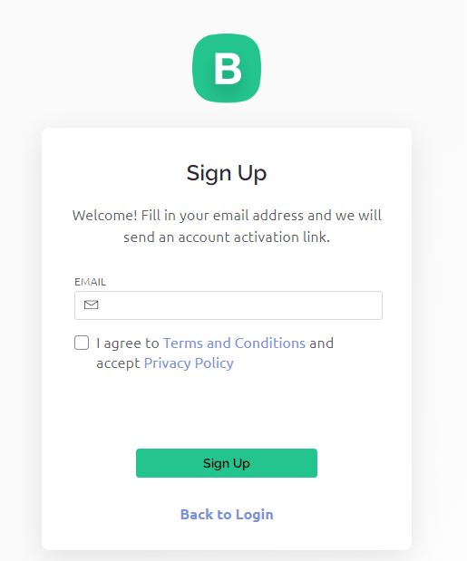
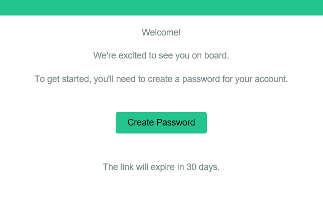
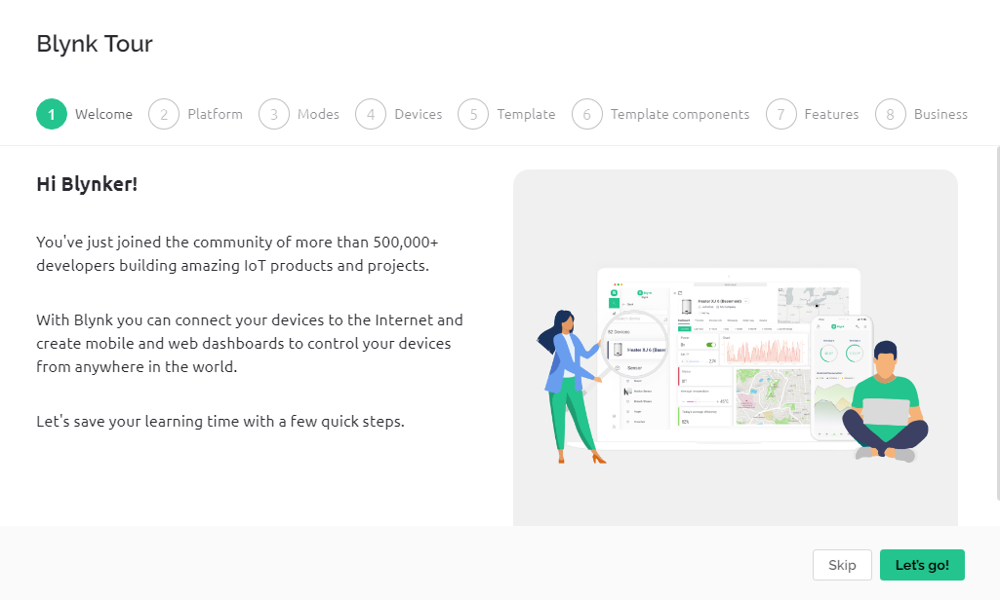
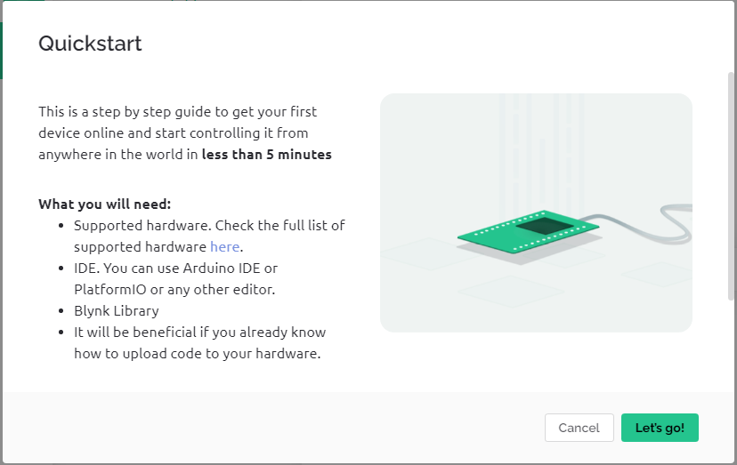
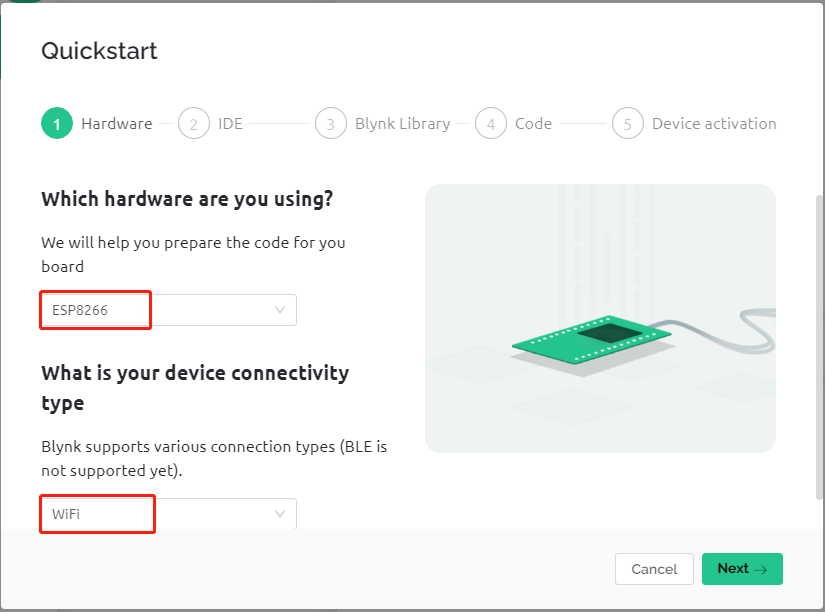
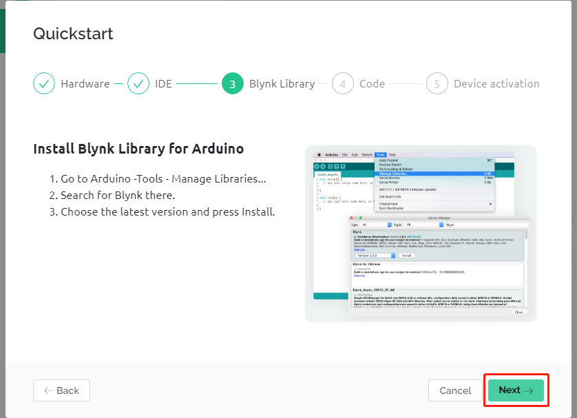
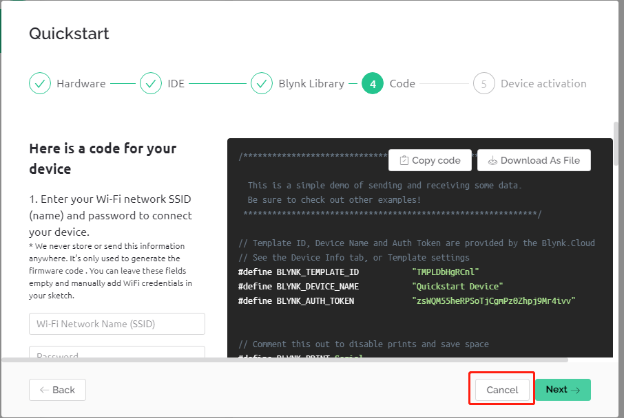
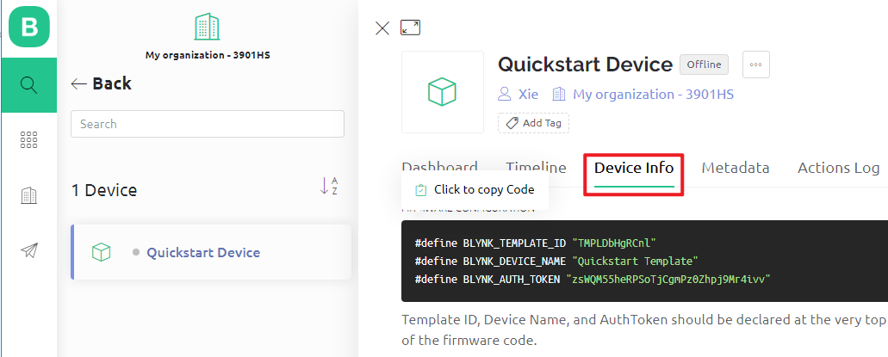

Bemerkung
Hallo und willkommen in der SunFounder Raspberry Pi & Arduino & ESP32 Enthusiasten-Gemeinschaft auf Facebook! Tauchen Sie tiefer ein in die Welt von Raspberry Pi, Arduino und ESP32 mit anderen Enthusiasten.
Warum beitreten?
Expertenunterstützung: Lösen Sie Nachverkaufsprobleme und technische Herausforderungen mit Hilfe unserer Gemeinschaft und unseres Teams.
Lernen & Teilen: Tauschen Sie Tipps und Anleitungen aus, um Ihre Fähigkeiten zu verbessern.
Exklusive Vorschauen: Erhalten Sie frühzeitigen Zugang zu neuen Produktankündigungen und exklusiven Einblicken.
Spezialrabatte: Genießen Sie exklusive Rabatte auf unsere neuesten Produkte.
Festliche Aktionen und Gewinnspiele: Nehmen Sie an Gewinnspielen und Feiertagsaktionen teil.
👉 Sind Sie bereit, mit uns zu erkunden und zu erschaffen? Klicken Sie auf [hier] und treten Sie heute bei!
1.2 Konfiguration von Blynk
Besuchen Sie die BLYNK Webseite und klicken Sie auf START FREE.

Geben Sie Ihre E-Mail-Adresse ein, um ein Konto zu registrieren.

Öffnen Sie Ihre E-Mail, um die Registrierung abzuschließen.

Anschließend erscheint die Blynk Tour, die Sie lesen können, um grundlegende Informationen über Blynk zu erhalten.

Als nächstes müssen wir mit diesem Quick Start eine Vorlage und ein Gerät erstellen. Klicken Sie auf Let’s go.

Wählen Sie die Hardware und den Verbindungstyp aus.

Hier wird Ihnen mitgeteilt, welche IDE Sie benötigen. Wir empfehlen die Arduino IDE.

Hier ist die Bibliothek, die Sie hinzufügen müssen. Die hier empfohlene Bibliothek ist jedoch etwas problematisch. Wir müssen andere Bibliotheken manuell hinzufügen (darauf kommen wir später zurück). Klicken Sie hier auf Next, und eine neue Vorlage und ein neues Gerät werden erstellt.

Die nächsten Schritte bestehen darin, den entsprechenden Code hochzuladen und Ihr Board mit Blynk zu verbinden. Da es jedoch ein Problem mit der zuvor bereitgestellten Bibliothek gibt, müssen Sie weitere Bibliotheken hinzufügen. Klicken Sie also hier auf Cancel, um Quick Start zu beenden.

Klicken Sie auf die Search-Schaltfläche, und Sie sehen das neu erstellte Gerät.

Gehen Sie zu diesem Quickstart Device und klicken Sie auf Device Info. Auf der Device info-Seite sehen Sie
TEMPLATE_ID,DEVICE_NAMEundAUTH_TOKEN, die Sie später kopieren müssen.